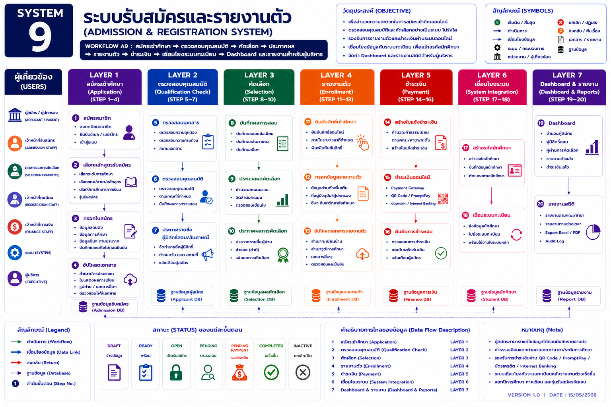

หน้าแรก › รับสมัครและรายงานตัว › ภาพรวมระบบรับสมัครและรายงานตัว
ภาพรวมระบบรับสมัครและรายงานตัว
Workflow กลางตั้งแต่สมัคร ตรวจสอบคุณสมบัติ คัดเลือก รายงานตัว ชำระเงิน เชื่อมระบบทะเบียน จนถึง Dashboard และรายงาน
SYSTEM 9: ระบบรับสมัครและรายงานตัว
